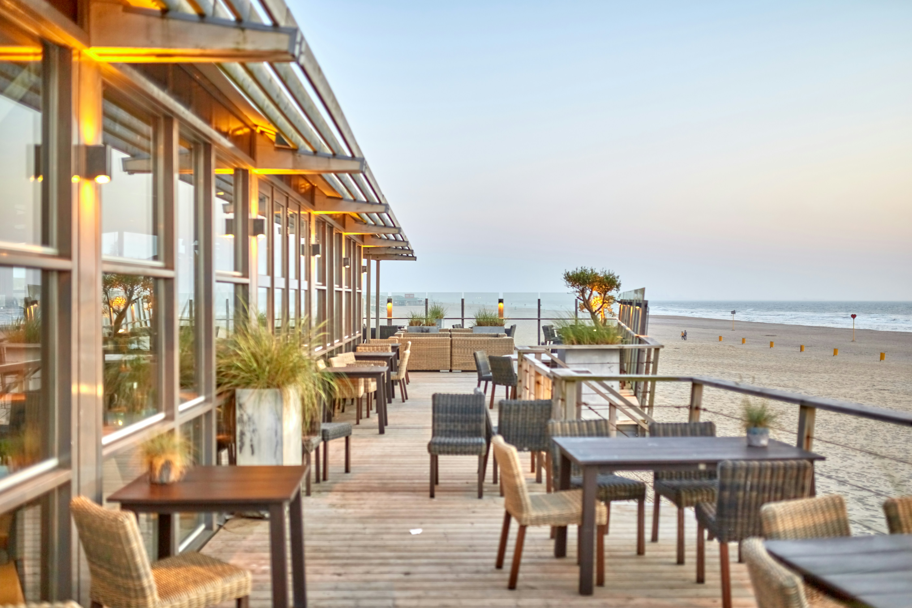

Taniti currently has 10 restaurants catering to a variety of tastes. Five specialize in local dishes featuring fresh fish and rice, offering authentic island flavors. Three restaurants serve American-style meals, perfect for travelers seeking familiar comfort food. Two Pan-Asian restaurants provide a diverse culinary experience, showcasing flavors from across the region.
For visitors who prefer to cook their own meals or pick up essentials, Taniti has a range of grocery options. There are two supermarkets, two smaller grocery stores, and one convenience store that is open 24 hours a day, ensuring access to fresh produce, snacks, and daily necessities at any time.
Many restaurants prioritize locally sourced ingredients, so expect fresh seafood and tropical fruits throughout your stay. Reservations are recommended at popular dining spots, especially during peak tourist season.
Visitors are encouraged to try the local specialties and explore the variety of culinary offerings. From casual dining to unique Pan-Asian flavors, Taniti provides memorable dining experiences for every traveler.